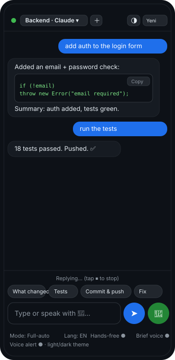

Hands-free, two-way voice for your coding agent. You speak or type; it does the work and replies in chat and aloud — like a phone call with your agent.

Why voicebridge
A tiny Node bridge drives the agent CLI on your machine and streams the reply back to your phone — as text and speech. No per-minute cloud voice cost, no API keys.
A Claude-Code-like chat with a text box and a mic. Replies render with code blocks and are read aloud.
Claude Code, Codex, Antigravity, and Ollama (a fully-local open model), selectable per session — each with autonomy modes.
Run several conversations at once ("Claude on repo A", "Codex on repo B") and switch between them in the UI.
A continuous, hands-free voice call with your agent: it speaks the reply sentence-by-sentence as it's generated, then listens again. An orb grows as it hears you; tap to interrupt, or 🎙️ to mute.
Reached over your Tailscale tailnet with real HTTPS and an optional shared token. Your code never touches a third-party voice service.
Browser Web Speech for STT/TTS out of the box, or plug in your own Whisper command to keep transcription on your machine too.
How it works
Speech-to-text and text-to-speech run in your phone's browser. A zero-dependency bridge relays the text to the agent CLI and streams its reply back.
[ iPhone Safari ] [ your Mac ] mic ─Web Speech STT─▶ text ──https/Tailscale──▶ voicebridge ──spawn──▶ claude / codex / agy speaker ◀─speechSynthesis─ reply ◀────────────── reply ◀─────────── (coding agent CLI)
npm start on your Mac/Linux box. It prints a QR code for your phone.
tailscale serve gives a real HTTPS URL — required for the phone mic.
Scan the QR in Safari, allow the mic, and talk. Toggle hands-free for a loop.
Quickstart
Needs Node ≥ 18, a logged-in agent CLI (e.g. claude),
and Tailscale on both your computer and phone.
git clone https://github.com/berkayturanci/speak-with-claude-code voicebridge && cd voicebridge npm install cp .env.example .env # set PROJECT_DIR + ACCESS_TOKEN npm start # prints a QR for your phone tailscale serve --bg --https=443 localhost:8787 # expose over HTTPS
Mic greyed out on the phone? That's the HTTPS requirement — see the step-by-step mobile voice setup guide.
FAQ
Yes. Speech-to-text and text-to-speech run in your phone's browser (Web Speech API) — no ElevenLabs, no per-minute voice cost, no API keys for the voice layer. You still pay your agent's own usage (e.g. your Claude plan).
The agent runs locally on your machine; voicebridge just removes the voice middleman. For Claude/Codex/Antigravity the model runs in its vendor's cloud (that's how those CLIs work); with the Ollama backend the model is fully local too. On iOS, speech recognition uses Apple's free dictation service; speech synthesis is fully on-device.
Browsers only expose the Web Speech API on a secure origin (HTTPS or
localhost). Over plain http://<lan-ip> the mic button is
disabled. Tailscale Serve gives your machine a real HTTPS certificate for free.
Yes — open it in a Safari tab (not an installed PWA; iOS blocks the microphone in installed PWAs).